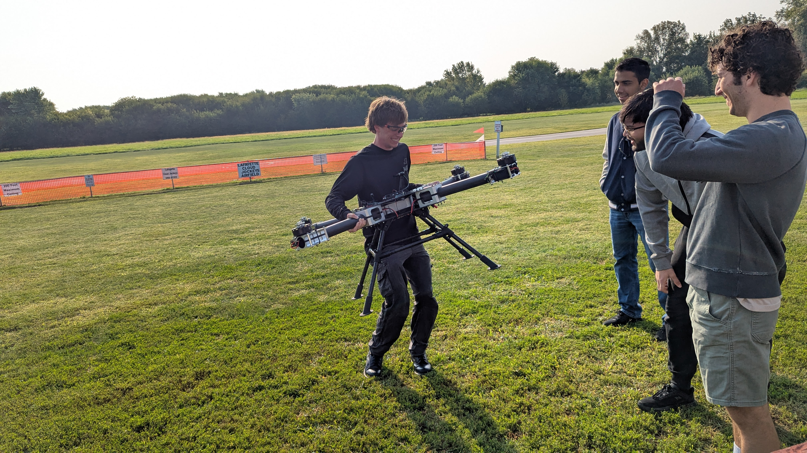
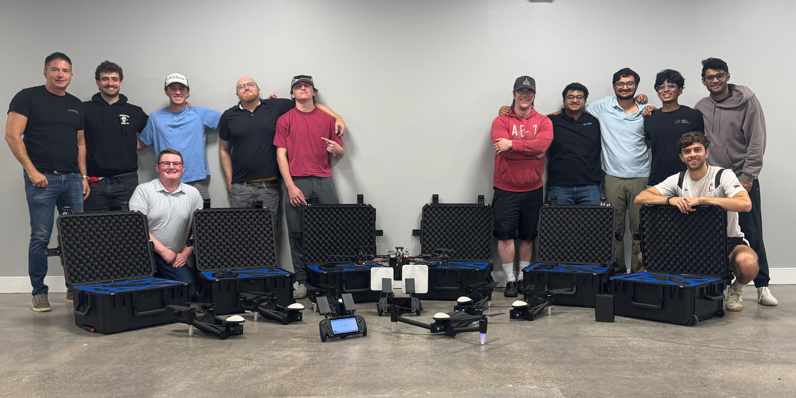
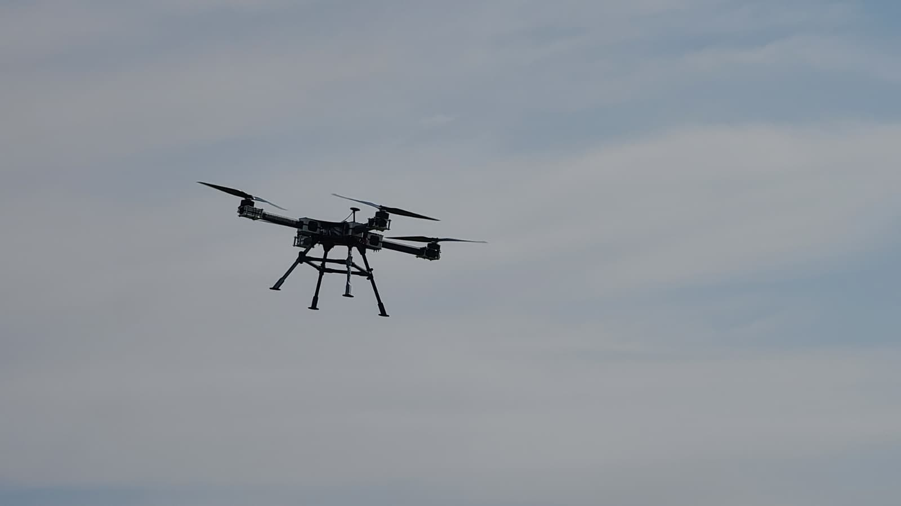
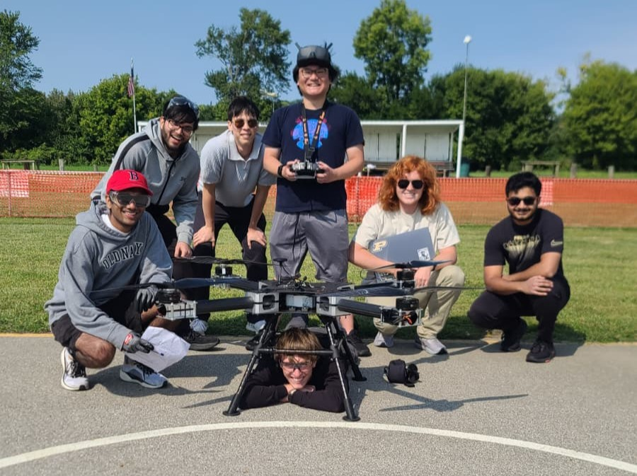
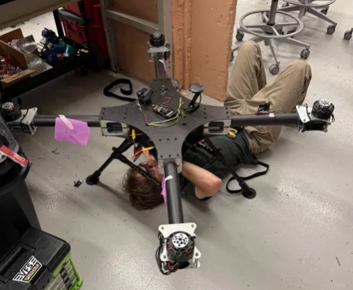
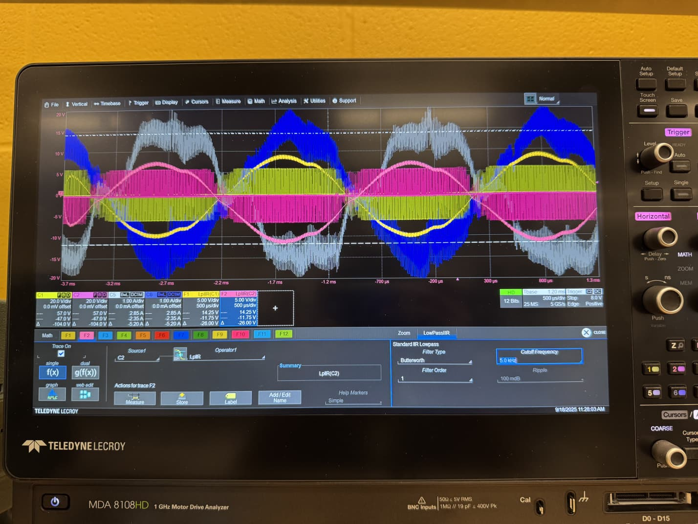
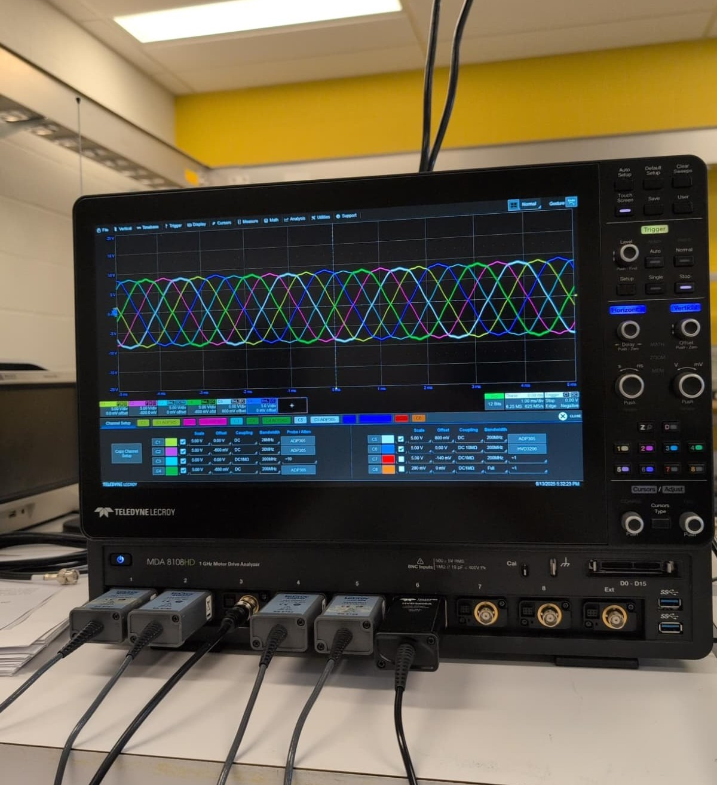

I am Valentino Cattaneo, a student pursuing a Bachelor of Science in Electrical Engineering at Purdue University with 3.94 GPA, concentrating in Power and Energy Systems and graduating in May 2028. Here lies a collection of personal, academic, and professional projects I have worked on and a small reflection of what each of these taught me. I am always looking for new opportunities to learn and grow, so please feel free to reach out if you have any questions or would like to collaborate on a project!

I am an aspiring engineer with a deep interest and passion for creating electric propulsion, embedded hardware and autonomous systems that can make a positive impact on the world. I've participated in several projects where I've developed my skills in designing, building and testing these: I've served as Vice President and am the current President of the Vertical Flight Systems (VFS) Purdue organization, where I lead a team of 30 students in designing and building a human-carrying emergency response drone for the GoAERO Competition. While building our 40% scaled-down prototype, I worked at the Purdue POWER Lab as an Undergraduate Researcher, where I focused on designing, modifying and testing multi-phase motor drives for UAV applications. Finally, since May 2026, I've been working as an Electrical Engineering Intern at Angel Aerial Systems, where I focus my time developing our battery pack, from the bare-cells to pack assembly process to the design and firmware integration of the battery management system.
Since May 2026, I have been working as an Electrical Engineering Intern at Angel Aerial Systems, where I am responsible for much of the battery system development for the Trio Scout, a 100-minute flight, easily deployable tricopter. My work spans the complete battery system, from pouch-cell assembly and interconnect design to BMS hardware and embedded firmware. I redesigned the aircraft's Battery Management System (BMS) to improve reliability, serviceability, and diagnostic capability I have also worked extensively on debugging existing hardware and software, including leading the BMS-side root cause analysis investigation of a pack issue.
On the pack side, I helped transition the pouch-cell assembly to resistance-welded interconnects, designing the associated electrical and mechanical interfaces in Siemens NX. For this task I worked alongside the mechanical team where we went over what felt like 100 iterations of BMS board shapes, tab bending shapes and techniques, and overall positioning of everything in our hyper-optimized pack.
This work has given me experience developing a safety-critical electrical system across the entire engineering cycle: from analyzing field issues and defining requirements to designing hardware, writing firmware, figuring out manufacturing and assembly, and validating the finished system.

At Purdue, I serve as the President of VFS Purdue for the International GoAERO VTOL Competition, where I lead a team of 30 Engineering students in designing and building an autonomous 250kg drone. Our team recently earned the U.S. University Innovation Award by NASA in Stage 1 of the Competition. As part of Stage 2, we designed, constructed, and autonomously flown a 40% scaled-down prototype. My technical work in both stages consisted of drafting a preeliminary aircraft sizing algorithm in MATLAB, avionics and propulsion sizing, wiring design, and integration of the avionics and propulsion of the prototype. For Stage 3 of the competition, I am working on leading the team towards designing and manufacturing a human-carrying aircraft and coordinating all logistical and technical decisions towards procuring, building, and flying, while also focusing my technical work in designing the 100V monitoring and balancing Battery Management System for our 14.4 kWh battery pack.


VFS team picture at the first test flight

Me wiring low-voltage perihperals to our 12V bus
Since June 2025, I have been an Undergraduate Research Assistant at the Power Electronics and Drives Research Lab, where I focus on designing, modifying and testing multi-phase motor drives and developing Sensored Field-Oriented Control (FOC) firmware with STM and TI microcontrollers for UAV applications. Currently, we're investigating a mode-switching controls algorithm implementation for a dual 3-phase drive, where at low to medium power draw the drive only uses half of the phases (enabling more efficient operation of a singular 3-phase inverter instead of having both working at a much lower Id than what they are designed for, therefore reducing efficiency of the system), and when higher speed (& torque) is needed, both inverters turn on, utilizing the 6 phases at the same time. My work also involves and relies heavily on troubleshooting issues and tuning motor model and control parameters using advanced lab equipment. I also gained teaching experience as a Mathematical Olympiads Tutor before coming to Purdue, guiding students to the Argentinian Nationals phase.

Voltages and Currents of phases A and A' from first motor drive prototype in 6-phase operation

6-phase back-emf of modified motor
I am passionate about aerospace, electric propulsion, and autonomous systems, and I’m excited to keep exploring how technology can solve real-world problems. You can learn more about my work in the Projects section.